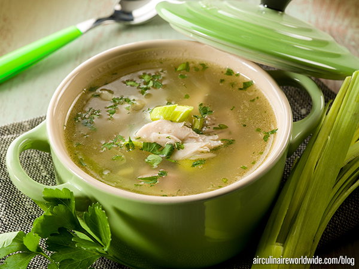

This is actually a recipe by Budget Bytes but without any spicy stuff because I am a weenie. It feels better to eat when you do the whole rigmarole of making your own stock from a roast chicken carcass but I have also used ramen seasoning packets to make the liquid and added in roast chicken slices from the supermarket so do whatever suits your time and budget tbh.
Obviously this is actually nothing like pho. If you ever find yourself at Victoria Park Market on a Sunday in London, there might still be an incredible Vietnamese food truck where you can get giant cups of real, nutritious, wholesome pho and beautiful banh mi for a very reasonable price. It was there when I last went in Jan 26. I really recommend it!
I can usually serve 3 people with this, pretty generously.